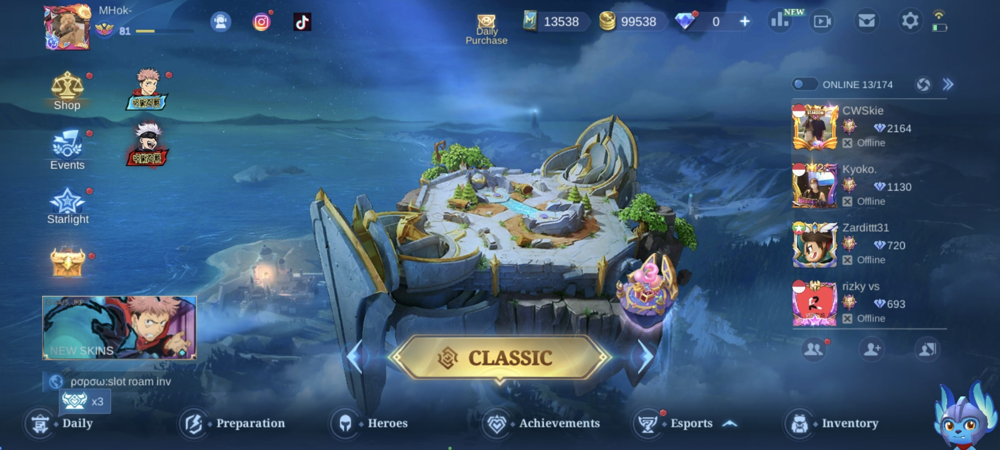
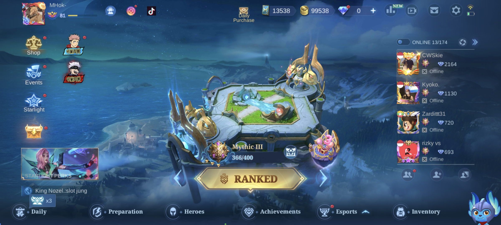
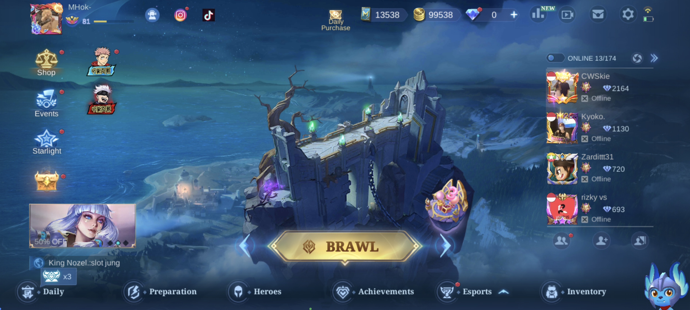
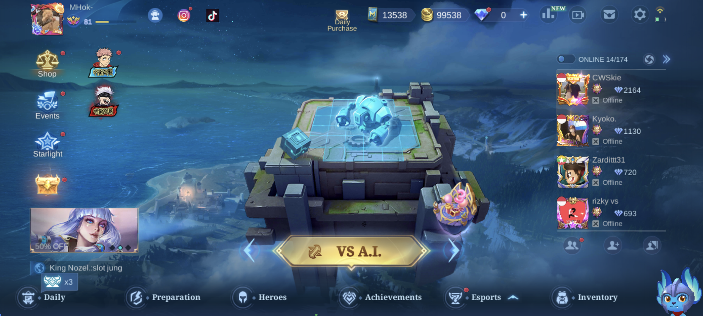
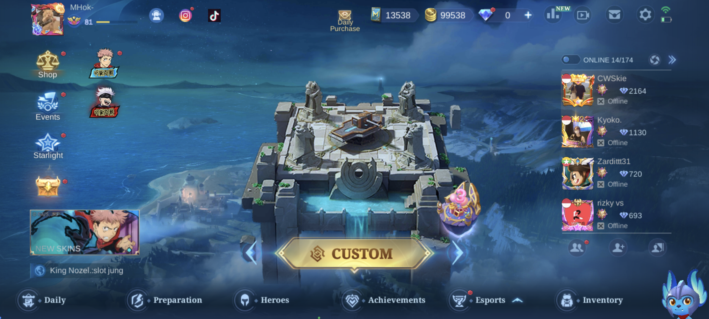

About

Mobile Legends: Bang Bang (MLBB) adalah game MOBA (Multiplayer
Online Battle Arena) yang dikembangkan oleh Moonton. Game ini
dirilis pada tahun 2016 dan telah menjadi salah satu game paling
populer di seluruh dunia.
Tujuan dari game ini adalah untuk
menghancurkan tower musuh dan basis mereka, sambil melindungi tower
dan basis sendiri. Setiap pemain memilih dan mengendalikan satu
karakter yang unik, yang dikenal sebagai "hero". Hero memiliki
kemampuan khusus yang dapat digunakan untuk membantu memenangkan
pertempuran.
Dalam game MLBB, komunikasi antar pemain sangat penting. Pemain
dapat berkomunikasi melalui obrolan teks atau suara untuk
berkoordinasi dalam pertandingan. Selain itu, game ini juga
menyediakan sistem penghargaan dan hukuman untuk mendorong perilaku
positif dan mempromosikan kerja sama tim.
Hero & Role

Mobile Legends: Bang Bang (MLBB) memiliki lebih dari 100 hero yang
dapat dipilih oleh pemain. Setiap hero memiliki kemampuan khusus
yang unik, tipe peran, dan keunggulan yang berbeda. Berikut adalah
penjelasan tentang beberapa tipe hero yang ada di Mobile Legends:
- Fighter: Hero yang memiliki kemampuan bertahan dan menyerang yang
seimbang. Mereka biasanya dapat bertahan dalam pertempuran dan
memiliki kekuatan serangan yang cukup kuat.
- Assassin: Hero
yang memiliki kemampuan tinggi untuk menyerang musuh dengan cepat
dan kuat. Mereka biasanya memiliki kecepatan dan mobilitas yang
tinggi serta serangan yang sangat mematikan.
- Mage: Hero yang
memiliki kekuatan sihir yang sangat kuat. Mereka biasanya mampu
menyerang dari jarak jauh dan memiliki kemampuan untuk mematikan
banyak musuh sekaligus.
- Marksman: Hero yang memiliki serangan
jarak jauh dan dapat memberikan banyak kerusakan pada musuh dengan
kecepatan serangan yang tinggi. Namun, mereka cenderung lebih lemah
dalam pertempuran jarak dekat.
- Tank: Hero yang memiliki
pertahanan yang sangat kuat dan mampu menahan serangan dari musuh.
Mereka biasanya berperan sebagai pelindung dalam tim dan mampu
menarik perhatian musuh.
- Support: Hero yang memiliki kemampuan untuk
membantu tim dalam pertempuran. Mereka biasanya memiliki kemampuan
penyembuhan atau memberikan efek yang membantu dalam pertempuran.
Mode
Mobile Legends: Bang Bang (MLBB) memiliki beberapa mode permainan yang dapat dimainkan oleh pemain. Berikut adalah penjelasan singkat mengenai beberapa mode permainan yang tersedia di MLBB:
Classic

Classic Mode di MLBB adalah mode permainan yang sangat populer dan menantang.
Mode ini menawarkan pertarungan MOBA yang seru dan intens, serta memungkinkan pemain
untuk berkomunikasi dan bekerja sama dengan tim mereka untuk mencapai kemenangan.
Ranked

Ranked Mode: mode di mana pemain dapat meningkatkan peringkat mereka dengan memenangkan
pertandingan dan mencapai peringkat yang lebih tinggi. Pemain akan diberikan peringkat
mulai dari Warrior hingga Mythic. Pemain dapat naik atau turun peringkat berdasarkan
hasil pertandingan mereka.
Brawl

Brawl Mode di Mobile Legends: Bang Bang (MLBB) adalah mode permainan cepat yang memungkinkan
pemain untuk bermain dengan aturan yang berbeda dari mode permainan klasik. Mode ini dirancang
untuk memberikan pengalaman yang menyenangkan dan santai bagi pemain, tanpa terlalu fokus pada
strategi yang rumit.
vs AI

Mode VS AI (Artificial Intelligence) di Mobile Legends: Bang Bang (MLBB) adalah mode permainan
di mana pemain dapat bermain melawan tim musuh yang dikendalikan oleh komputer atau AI. Mode ini
dirancang untuk memberikan pengalaman bermain yang lebih santai dan lebih mudah bagi pemula, serta
sebagai cara untuk berlatih dan mengembangkan keterampilan gameplay.
Custom

Mode Custom di Mobile Legends: Bang Bang (MLBB) adalah mode permainan di mana pemain dapat membuat pertandingan
dengan aturan khusus yang ditentukan sendiri. Mode ini memungkinkan pemain untuk membuat pertandingan yang unik
dan berbeda dari mode permainan lainnya, dan juga dapat digunakan untuk berlatih keterampilan atau mencoba strategi
baru dengan teman atau rekan satu tim.
Dalam Mode Custom, pemain dapat memilih berbagai opsi dan aturan, seperti mode draft pick, mode pick-hero acak,
tingkat kesulitan, jumlah pemain, dan banyak lagi. Pemain juga dapat mengundang teman atau rekan satu tim untuk
bergabung dalam pertandingan, atau bahkan mengundang pemain lain di luar teman atau rekan satu tim untuk bergabung.